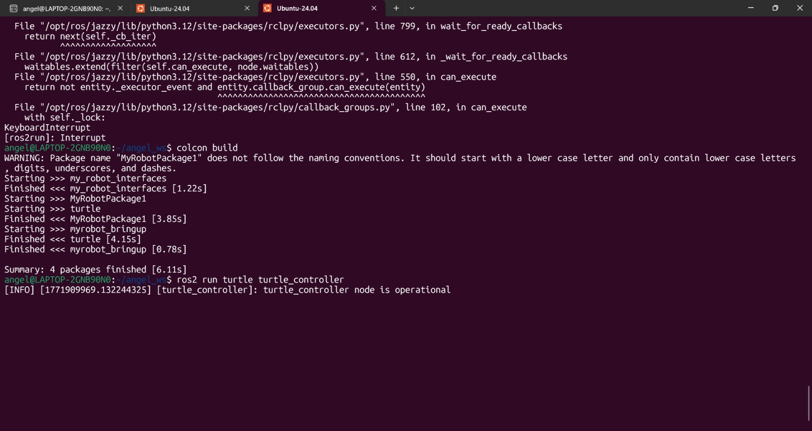
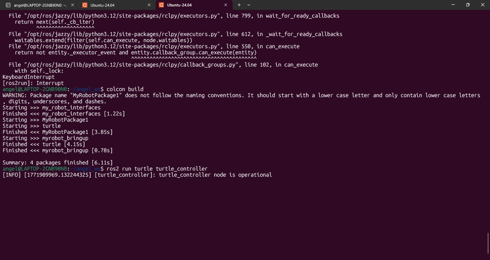
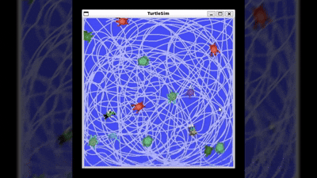
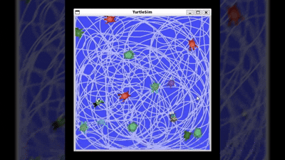

📚 Ros2 Turtlesim Catch Them All
In this assignment, I created a robotic ecosystem using ROS 2. It features a "Spawner" node that generates turtles randomly and a "Controller" node with PID Controller to autonomously hunt them.
1) Summary
- Homework Name: ROS 2 Turtlesim Catch Them All
- Author: Angel Ivan Dominguez Cruz
- Subject: Applied Robotics
- Date: 24/02/2026
2) Objectives
- General: Understand how to integrate multiple ROS 2 concepts simultaneously: custom messages, custom services, dynamic parameters, publishers, subscribers, clients, and servers.

3) Previous Step: Creating the Service Interface
Before writing the node logic, we needed to create a custom communication bridge so the Spawner and the Controller could share information about the alive turtles and the catching events.
Inside the my_robot_interfaces package, we created three files:
- Turtle.msg: Defines the structure of a single turtle.
- TurtleArray.msg: Defines a list of turtles.
- CatchTurtle.srv: A service definition used by the controller to tell the spawner which turtle to remove. After modifying CMakeLists.txt and package.xml, we compiled the package using colcon build.
4) Fisrt Code: Turtle Spawner Node
#!/usr/bin/env python3
import rclpy
from rclpy.node import Node
import random
import math
from my_robot_interfaces.msg import Turtle, TurtleArray
from turtlesim.srv import Spawn, Kill
from my_robot_interfaces.srv import CatchTurtle
- Libraries: Imports standard ROS 2 libraries, Python math/random modules, our custom interfaces, and the official Turtlesim services (Spawn and Kill).
class myNode_function(Node):
def __init__(self):
super().__init__('turtle_spawner')
self.alive_turtles_ = []
self.publishers_= self.create_publisher(TurtleArray, 'alive_turtles', 10)
self.counter = 2
self.create_timer(1.0, self.publish_turtles)
self.declare_parameter("spawn_frequency", 1.0)
self.frequency_ = self.get_parameter('spawn_frequency').value
spawn_period = 1.0 / self.frequency_
self.create_timer(spawn_period, self.spawn_turtle)
self.spawn_ = self.create_client(Spawn, 'spawn')
self.kill_ = self.create_client(Kill, 'kill')
self.catch_turtles_ = self.create_service(CatchTurtle, 'catch_turtle', self.catch_turtle_callback)
- Initialization: Initializes an empty list of alive turtles and a publisher. It introduces a ROS 2 Parameter (spawn_frequency) that allows us to change how fast turtles spawn directly from the terminal without changing the code. It also sets up clients to talk to Turtlesim and a Server (catch_turtle) to listen to our Controller.
def spawn_turtle(self):
spawn_request = Spawn.Request()
spawn_request.x = random.uniform(0.0, 11.0)
spawn_request.y = random.uniform(0.0, 11.0)
spawn_request.theta = random.uniform(0.0, 2*math.pi)
spawn_request.name = f'turtle{self.counter}'
self.counter += 1
future = self.spawn_.call_async(spawn_request)
future.add_done_callback(
lambda future_msg: self.spawn_callback(future_msg, spawn_request.x, spawn_request.y, spawn_request.theta)
)
- Spawning Logic: Triggered by the timer, this function generates random coordinates and sends an asynchronous request to Turtlesim to spawn a new turtle. It uses a lambda function to pass the coordinates to the callback once the server responds.
def catch_turtle_callback(self, request, response):
kill_request = Kill.Request()
kill_request.name = request.name
self.kill_.call_async(kill_request)
for turtle in self.alive_turtles_:
if turtle.name == request.name:
self.alive_turtles_.remove(turtle)
break
self.publish_turtles()
response.success = True
return response
- Catch Logic: When the Controller node catches a turtle, it calls this service. This function asks Turtlesim to Kill (remove) the turtle from the screen, removes it from our internal alive_turtles_ list, and updates the published array.
def main(args=None):
rclpy.init(args=args)
parameters_node=myNode_function()
rclpy.spin(parameters_node) #keeps going a program until someone stop it
rclpy.shutdown()
-
Main Execution: The main function initializes the ROS2 communication (rclpy.init), creates an instance of the class, and uses rclpy.spin to keep the node running and listening for callbacks until the program is manually stopped. Finally, it shuts down the ROS 2 client library cleanly.
-
Full Code:
import rclpy from rclpy.node import Node import random import math from example_interfaces.msg import String from my_robot_interfaces.msg import Turtle #custom type msg (name, x, y, and theta) from my_robot_interfaces.msg import TurtleArray #custom type msg (array of turtles) from turtlesim.srv import Spawn from turtlesim.srv import Kill from my_robot_interfaces.srv import CatchTurtle class myNode_function(Node): def __init__(self): super().__init__('turtle_spawner') #define the node's name, used for the yaml file self.alive_turtles_ = [] self.publishers_= self.create_publisher(TurtleArray, 'alive_turtles',10)#crear publisher self.counter = 2 self.get_logger().info('turtle_spawner node is operational') #confirmation message self.create_timer(1.0, self.publish_turtles) #each second timer self.declare_parameter("spawn_frequency", 1.0) #declare a parameter with a default value self.frequency_ = self.get_parameter('spawn_frequency').value #get the parameter value on the variable frequency_ spawn_period = 1.0 / self.frequency_ self.create_timer(spawn_period, self.spawn_turtle) self.spawn_ = self.create_client(Spawn, 'spawn') self.kill_ = self.create_client(Kill, 'kill') self.catch_turtles_ = self.create_service(CatchTurtle, 'catch_turtle', self.catch_turtle_callback)#waits for a request in "catch_turtle" with structure CatchTurtle and executes the function catch_turtle_callback def publish_turtles(self): msg = TurtleArray()#msg of type TurtleArray, which contains an array of turtles msg.turtles = self.alive_turtles_#saving the alive turtles in the msg, the list has to be a Turtle type list self.publishers_.publish(msg) def spawn_turtle(self): spawn_request = Spawn.Request() #request object for the service (x, y, theta, name) spawn_request.x = random.uniform(0.0, 11.0) #random x spawn_request.y = random.uniform(0.0, 11.0) #random y spawn_request.theta = random.uniform(0.0, 2*math.pi) #random spawn_request.name = f'turtle{self.counter}' #name of the turtle self.counter += 1 future = self.spawn_.call_async(spawn_request)#call the spawn service with the request, it returns a future object that will contain the response of the service when it is ready future.add_done_callback(#when tutlesim service responds, it will execute the spawn_callback function lambda future_msg: self.spawn_callback(future_msg, spawn_request.x, spawn_request.y, spawn_request.theta)#future_msg is the response of the service and the other parameters are the ones we sent in the request, we need them to create the turtle in the spawn_callback function ) def spawn_callback(self, future_msg, x, y, theta): try: response = future_msg.result() new_turtle = Turtle() new_turtle.name = response.name# /spawn only gives a name new_turtle.x = x new_turtle.y = y new_turtle.theta = theta self.alive_turtles_.append(new_turtle) self.get_logger().info(f'Turtle {response.name} spawned at ({x}, {y}, {theta})') except Exception as e: self.get_logger().error(f'Failed to spawn turtle: {e}') def catch_turtle_callback(self, request, response): kill_request = Kill.Request()#request to /kill kill_request.name = request.name#turtle name to kill self.kill_.call_async(kill_request)#send the kill request to the service (kill_ is the client for the /kill service) for turtle in self.alive_turtles_: if turtle.name == request.name: self.alive_turtles_.remove(turtle)#delete the turtle from the alive turtles list break self.publish_turtles() #publish the updated list of turtles after catching one self.get_logger().info(f'Turtle {request.name} caught and removed from alive turtles') response.success = True return response def main(args=None): rclpy.init(args=args) parameters_node=myNode_function() rclpy.spin(parameters_node) #keeps going a program until someone stop it rclpy.shutdown()
5) Second Code: Turtle Controller Node (PID)
import rclpy
from rclpy.node import Node
import random
import math
from example_interfaces.msg import String
from my_robot_interfaces.msg import Turtle
from my_robot_interfaces.msg import TurtleArray
from turtlesim.msg import Pose
from geometry_msgs.msg import Twist
from my_robot_interfaces.srv import CatchTurtle
- Libraries: Just like the spawner, we import standard libraries (rclpy, Node, math) and our custom interfaces. The key additions here are Pose from turtlesim.msg (used to get our exact coordinates) and Twist from geometry_msgs.msg (the universal ROS 2 message for commanding linear and angular velocities to move the robot).
class myNode_function(Node):
def __init__(self):
super().__init__('turtle_controller')
self.pose = None
self.integral_linear = 0.0
self.prev_error_linear = 0.0
self.integral_angular = 0.0
self.prev_error_angular = 0.0
self.current_target_name = ""
self.dt = 0.001
self.suscriber_alive_turtles = self.create_subscription(
TurtleArray,'alive_turtles',self.alive_turtles_callback,10)
self.suscriber_pose = self.create_subscription(
Pose,'turtle1/pose',self.pose_callback,10)
self.alive_turtles_ = []
self.publishers_= self.create_publisher(Twist, 'turtle1/cmd_vel',10)
self.catch_ = self.create_client(CatchTurtle, 'catch_turtle')
self.create_timer(0.001, self.control_turtles)
self.get_logger().info('turtle_controller node is operational')
- Node Initialization: The node is named "turtle_controller". We initialize self.pose = None to avoid crashing before the first GPS message arrives. We declare variables to store the PID controller memory: integrals (accumulated error) and previous errors, for both linear and angular movements. self.dt = 0.001 represents the time differential. We create two Subscribers (for the alive turtles list and our own pose), one Publisher for the Twist commands, and a Client for the CatchTurtle service. Finally, a fast timer (0.001s) is created to run the control loop.
def alive_turtles_callback(self, msg: TurtleArray):
self.alive_turtles_ = msg.turtles
def pose_callback(self, msg: Pose):
self.pose = msg
- Subscriber Callbacks: Every time the Spawner publishes the array of targets, alive_turtles_callback updates our internal list. Every time the simulator publishes the hunter's coordinates, pose_callback saves the data into self.pose.
def control_turtles(self):
if self.pose is None or len(self.alive_turtles_) == 0:
return
closest_turtle = None
closest_distance = 1000.0
for turtle in self.alive_turtles_:
dist_x = turtle.x - self.pose.x
dist_y = turtle.y - self.pose.y
distance = math.sqrt(dist_x**2 + dist_y**2)
if distance < closest_distance:
closest_distance = distance
closest_turtle = turtle
if closest_turtle is None:
self.get_logger().info("No closest turtle found.")
return
if closest_turtle.name != self.current_target_name:
self.integral_linear = 0.0
self.prev_error_linear = 0.0
self.integral_angular = 0.0
self.prev_error_angular = 0.0
self.current_target_name = closest_turtle.name
- Target Lock: This part of the control loop ensures we have data. Then, it uses the Pythagorean theorem to calculate the distance to all alive turtles and selects the closest one. If the closest turtle is different from our current target, we will change the current target. To avoid erratic movements from old PID memory, it resets the integrals and derivatives to 0.0 and saves the new target's name.
if closest_distance < 0.5:
msg = Twist()
msg.linear.x = 0.0
msg.angular.z = 0.0
self.publishers_.publish(msg)
request = CatchTurtle.Request()
request.name = closest_turtle.name
self.catch_.call_async(request)
return
- Catch Condition: If the distance to the target is less than 0.5 units, the robot considers it caught. It immediately publishes a Twist message with 0.0 velocities to stop the hunter. It then prepares a CatchTurtle request with the prey's name and sends it to the Spawner node asynchronously. The function returns early to stop the PID calculations for this cycle.
msg = Twist()
target_angle = math.atan2(closest_turtle.y - self.pose.y, closest_turtle.x - self.pose.x)
error_angular = target_angle - self.pose.theta
if error_angular > math.pi:
error_angular -= 2 * math.pi
elif error_angular < -math.pi:
error_angular += 2 * math.pi
self.integral_angular += error_angular * self.dt
derivative_angular = (error_angular - self.prev_error_angular) / self.dt
Kp_angular = 2.0
Ki_angular = 0.1
Kd_angular = 0.5
msg.angular.z = Kp_angular * error_angular + Ki_angular * self.integral_angular + Kd_angular * derivative_angular
self.prev_error_angular = error_angular
error_linear = closest_distance
self.integral_linear += error_linear * self.dt
derivative_linear = (error_linear - self.prev_error_linear) / self.dt
Kp_linear = 1.0
Ki_linear = 0.1
Kd_linear = 0.5
msg.linear.x = Kp_linear * error_linear + Ki_linear * self.integral_linear + Kd_linear * derivative_linear
self.prev_error_linear = error_linear
self.publishers_.publish(msg)
- PID Controller:
- Angular (Steering): It uses atan2 to find the desired angle and calculates the error. It standardizes the error between -π and π to take the shortest path. It applies numerical integration (multiplying error by dt) and derivation (rate of change over dt). It applies the Gains (Kp, Ki, Kd) and assigns the result to the angular velocity (msg.angular.z).
-
Linear (Accelerator): The error is simply the distance. It calculates its integral and derivative (the braking effect before a crash). It applies its respective Gains and assigns the result to the linear velocity (msg.linear.x). Finally, it publishes the movement.
-
Main Execution: The main function initializes ROS 2, creates the node object, and spins it to keep the 0.001s control loop timer active. This ensures the PID controller evaluates the math continuously until the user stops the program.
-
Full Code:
import rclpy from rclpy.node import Node import random import math from example_interfaces.msg import String from my_robot_interfaces.msg import Turtle #custom type msg (name, x, y, and theta) from my_robot_interfaces.msg import TurtleArray #custom type msg (array of turtles) from turtlesim.msg import Pose from geometry_msgs.msg import Twist from my_robot_interfaces.srv import CatchTurtle class myNode_function(Node): def __init__(self): super().__init__('turtle_controller') #define the node's name, used for the yaml file self.pose = None self.integral_linear = 0.0 self.prev_error_linear = 0.0 self.integral_angular = 0.0 self.prev_error_angular = 0.0 self.current_target_name = "" #for saving the name of the turtle we are trying to catch, so we don't change the target until we catch it or it disappears self.dt = 0.001 #our control loop runs every 0.01 seconds, so dt is 0.01 for the PID controller self.suscriber_alive_turtles = self.create_subscription( TurtleArray,'alive_turtles',self.alive_turtles_callback,10) #create subscriber to alive_turtles self.suscriber_pose = self.create_subscription( Pose,'turtle1/pose',self.pose_callback,10) #create subscriber to turtle_pose self.alive_turtles_ = [] self.publishers_= self.create_publisher(Twist, 'turtle1/cmd_vel',10)#crear publisher self.catch_ = self.create_client(CatchTurtle, 'catch_turtle')#client for the catch_turtle service, we will use it to catch turtles from this node self.create_timer(0.001, self.control_turtles) self.get_logger().info('turtle_controller node is operational')#confirmation message def alive_turtles_callback(self, msg: TurtleArray): self.alive_turtles_ = msg.turtles def pose_callback(self, msg: Pose): self.pose = msg def control_turtles(self): if self.pose is None or len(self.alive_turtles_) == 0:#if we don't have the pose of our turtle or there are no alive turtles, return and do nothing return closest_turtle = None closest_distance = 1000.0#a huge number for turtle in self.alive_turtles_: #Calculate the distance from our turtle to each alive turtle dist_x = turtle.x - self.pose.x dist_y = turtle.y - self.pose.y distance = math.sqrt(dist_x**2 + dist_y**2) if distance < closest_distance: closest_distance = distance closest_turtle = turtle if closest_turtle is None: self.get_logger().info("No closest turtle found.") return if closest_turtle.name != self.current_target_name:#if the closest turtle is different, we creset the PID. Current target starts as an empty string, so the if will enter in the first iteration self.integral_linear = 0.0 self.prev_error_linear = 0.0 self.integral_angular = 0.0 self.prev_error_angular = 0.0 self.current_target_name = closest_turtle.name if closest_distance < 0.5:#if the closest turtle is less than 0.5 units away, we catch it msg = Twist()#msg of type Twist, which contains linear and angular velocities msg.linear.x = 0.0 msg.angular.z = 0.0 self.publishers_.publish(msg) request = CatchTurtle.Request() request.name = closest_turtle.name self.catch_.call_async(request) return msg = Twist() target_angle = math.atan2(closest_turtle.y - self.pose.y, closest_turtle.x - self.pose.x)#angle to the target turtle error_angular = target_angle - self.pose.theta#error between the angle to the target and our turtle's angle if error_angular > math.pi:#standardize the error to be between -pi and pi, so we take the shortest path error_angular -= 2 * math.pi elif error_angular < -math.pi: error_angular += 2 * math.pi self.integral_angular += error_angular * self.dt #numeric method for the integral (thanks Oscar Fountains) derivative_angular = (error_angular - self.prev_error_angular) / self.dt #the speed at which the error is changing. Numeric method for the derivative (thanks Oscar Fountains) Kp_angular = 2.0 Ki_angular = 0.1 Kd_angular = 0.5 msg.angular.z = Kp_angular * error_angular + Ki_angular * self.integral_angular + Kd_angular * derivative_angular#angular msg of twist self.prev_error_angular = error_angular#save the error for the next iteration error_linear = closest_distance#the error for the linear velocity is the distance to the target self.integral_linear += error_linear * self.dt#the distance error integrated over time, it increases when we are far from the target and decreases when we are close derivative_linear = (error_linear - self.prev_error_linear) / self.dt #the speed at which the distance error is changing Kp_linear = 1.0 Ki_linear = 0.1 Kd_linear = 0.5 msg.linear.x = Kp_linear * error_linear + Ki_linear * self.integral_linear + Kd_linear * derivative_linear#linear msg of twist self.prev_error_linear = error_linear#save the error for the next iteration self.publishers_.publish(msg) def main(args=None): rclpy.init(args=args) parameters_node=myNode_function() rclpy.spin(parameters_node) #keeps going a program until someone stop it rclpy.shutdown()
6) Bringup Package (Launch + Params)
To run our entire ecosystem (the simulator, the spawner, and the controller) with a single command, we used an XML launch file and a CMake build type.
We created a new package named "myrobot_bringup" and structured it with a "config" folder for our parameters and a "launch" folder for our XML launch file.
- Inside "myrobot_bringup/config/rob_param.yaml", we defined the parameters we want into our nodes. In this case, we set the spawn frequency for our "turtle_spawner".
- Inside "myrobot_bringup/launch/app_launch.xml", we wrote an XML script to control the startup of all three nodes and load the YAML file.
<launch>
<node pkg="turtlesim" exec="turtlesim_node" name="turtlesim" />
<node pkg="turtle" exec="turtle_spawner" name="turtle_spawner">
<param from="$(find-pkg-share myrobot_bringup)/config/rob_param.yaml" />
</node>
<node pkg="turtle" exec="turtle_controller" name="turtle_controller" />
</launch>
<launch>: The root tag that defines this as a ROS 2 launch file.
- <node>: This tag starts a specific node. We specify the package ("pkg"), the executable name ("exec"), and the node name ("name").
- <param from="..." />: Inside the spawner node block, we use this tag to dynamically locate the "myrobot_bringup" package and inject the "rob_param.yaml" configuration into the node at runtime.
- Because "myrobot_bringup" is a CMake package, we needed to instruct the compiler to install our "launch" and "config" folders into the ROS 2 share directory so they can be found during execution. We added this snippet to "CMakeLists.txt" right before "ament_package()":
- After building the workspace ("colcon build"), the entire project—with the adjusted 3.0 spawn rate—can be booted up simultaneously using a single terminal command:
7) Results

 

 

8) Conclusions
- General: We built a fully autonomous system, a very big challenge for our programming skills. We learned how to manage robot states dynamically and applied real-world Calculus to solve robotic problems through a PID Controller. The resulting movement is optimized, and independent of processor speed thanks to the proper use of the time differential (dt) in our mathematical integrations.